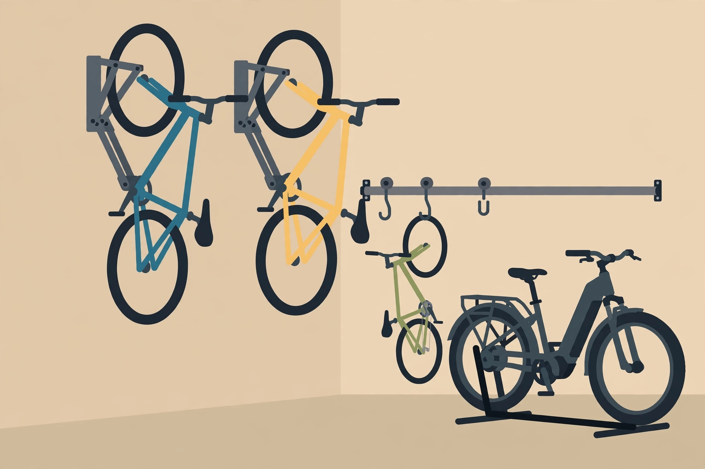

Bike storage in the garage: match the system to the bikes, not the catalogue

Bikes are awkward garage citizens: too big to shelve, too tippy to lean, and always in the way of the car door. The usual fix is to shop a ranked list of racks and pick the winner. That works until the winner meets your actual fleet — a heavy e-bike, a fat-tyre mountain bike, a child's bike that gets used every day and buried at the back. A better order of operations is to measure the fleet first, then let those three numbers — heaviest bike, widest tyre, and how honestly you can lift — choose the storage family for you.
Start with the fleet, not the catalogue
Run this decision framework before looking at any product:
- Weigh the heaviest bike. A bathroom scale works: weigh yourself holding the bike, then without it. That number rules out more products than any other single fact, because rack ratings are per hook or per rack, not per fleet.
- Measure the widest tyre. Hook and channel widths are hard physical limits. A rack that fits a road tyre may simply not accept a wide mountain-bike tyre, no matter how strong it is.
- Be honest about lifting. A storage system you dread using becomes a bike leaned against the wall next to it. If lifting a bike to shoulder height is a strain, the right answer is at waist height or on the floor — and that is a legitimate answer, not a compromise.
- Count the bikes and rank them by use. The daily rider needs the front position. The bike ridden twice a year can live at the back or up high.
Only after those four answers exist does comparing products make sense — and at that point the comparison is mostly arithmetic, which is exactly what you want.
Verify the specs: per-hook ratings and tyre limits
Spec verification matters here because headline numbers mislead in a specific way: a system can advertise a generous total while each individual hook carries far less. Garage storage guidance makes the same point — check the per-hook figure rather than the total, because a high total can still rest on one weak hook.
Two published examples show the spread. Cyclingnews' review of the Decathlon five-bike wall rack lists a rail maximum load of 150 kg, but each sliding hook is rated to 30 kg per bike, with tyre compatibility from 23 to 80 mm, on about 1.5 m of sturdy wall. The review notes that some e-bikes may exceed that 30 kg per-hook limit. The Steadyrack Classic, a pivoting single-bike rack, publishes a maximum recommended weight of 35 kg and a maximum tyre width of up to 2.1 inches, for wheel diameters of 20 to 29 inches. Neither number is better in the abstract — what matters is whether your heaviest bike and widest tyre fit inside the limits of the system you are considering, with margin to spare.
Mounting is part of the spec, not an afterthought. The Steadyrack guidance states that the manufacturer does not recommend installing its racks into drywall alone, and that doing so voids the warranty. The general rule across garage storage guides is the same: mount into wall studs or into a ledger board that spreads the load across studs, rather than trusting drywall anchors with a suspended bike.
Compare the four storage families
| Family | How it holds the bike | Best for | Watch out for |
|---|---|---|---|
| Simple wheel hooks | Front wheel hung from a wall or ceiling hook | Light bikes, tight budgets, spare bikes | You lift the full bike every time; fixed positions mean retrieval order is set by the hooks |
| Sliding rail systems | Hooks slide along a wall rail; bikes hang side by side | Households with several bikes on one wall | Per-hook rating governs; rail needs a long run of sturdy, stud-backed wall |
| Pivoting racks | Bike rolls up into a cradle, then swings flat against the wall | Daily riders in narrow garages; the Steadyrack design pivots up to 160 degrees and folds away | Tyre-width and fender limits; one rack per bike, so wall space adds up |
| Floor stands | Bike rolls into a ground-level stand or rack | Heavy bikes and e-bikes; riders who should not lift | Uses floor space — the thing wall storage was meant to save |
Hanging bikes off the floor has a real payoff beyond tidiness: it protects rims and tyres from grit and standing moisture, and it returns the floor to cars and walking paths. But the table's last row is the honest exception — for a heavy bike, floor space spent is better than a shoulder injured or a bike dropped onto a car.
Heavy bikes and e-bikes: ground level wins
E-bikes change the calculation twice over. First, weight: a hanger must be rated above the bike's actual weight, and as the Decathlon example shows, a per-hook limit of 30 kg already excludes some e-bikes entirely. Second, lifting: even where a rack is rated for the weight, you are the crane. A roll-in floor stand, or a pivoting rack that lets the bike's own wheel do the work, respects both limits. Ceiling pulley hoists belong in this conversation only for genuinely light bikes — hoisting a heavy bike overhead combines the worst lifting position with the worst place for something to fall.
Store the battery like a battery
The part of e-bike storage that garage guides almost never cover is the battery, and it has its own rules. Bosch, which publishes detailed battery guidance for its e-bike systems, says to remove the battery if possible when the bike will be stored or unused for a long period. For that storage, Bosch's ideal is a dry environment at temperatures between 0 and 20 degrees Celsius, in a well-ventilated place with a smoke detector, away from heat sources and flammable materials. Bosch also advises storing the battery at a partial charge — 30 to 60 percent — rather than full or empty, because storage at very high or very low charge, and exposure to high temperatures, shortens battery life.
Translated into garage terms: the battery does not live on a shelf above the car next to the paint thinner, and it does not spend the winter at full charge in a freezing corner if a milder indoor spot exists. Give it a labelled, ventilated home at ground level, charge it to roughly half before a long layoff, and keep the charger with it so neither migrates. That small routine is worth more to the bike's lifespan than which rack holds the frame.
Plan retrieval order for more than two bikes
Multi-bike households hit a problem product photos never show: the bike you need is behind two others. Ceiling-storage reviewers note the same pattern with fixed-hook rails — reaching the back bike can mean removing the front bike first — while sliding-rail designs let any bike in the row be accessed without moving the rest. Pivoting racks solve it differently: each bike swings out independently, so order stops mattering. Whichever family you choose, assign positions by use, not by size or by who parked first: daily riders at the front or on their own pivoting rack, the guest bike and the project bike at the back. Then protect the arrangement with the same labelling habit used for bins — a small tag at each position with the bike's name ends the slow drift back to chaos.
Set up the bike zone: numbered procedure
- Weigh the heaviest bike and measure the widest tyre; write both numbers down.
- Choose the storage family from the comparison table using those numbers and your lifting limit — not the other way round.
- Find the studs on the chosen wall and mark them; plan a ledger board if rack positions do not land on studs.
- Verify the chosen product's per-hook or per-rack rating and tyre limit against your written numbers, with margin.
- Mount into studs or the ledger, then hang the heaviest bike first and check for flex, pull-out, or cradle slip before adding the rest.
- Assign positions by riding frequency, tag each position, and park the car to confirm door swing and walkway clearance.
- Set up the battery spot: ground level, ventilated, away from heat and flammables, charger stored alongside.
What success looks like: every bike comes out and goes back in under a minute, the daily rider never requires moving another bike, the heaviest bike involves no overhead lifting, and the car door opens fully without a handlebar negotiation.
FAQ
Can a wall hook hold an e-bike? Only if the hook's per-hook rating exceeds the bike's actual weight — published examples run from 30 kg per hook on a multi-bike rail to 35 kg maximum on a pivoting rack, and some e-bikes exceed both. Weigh the bike; do not guess.
Is vertical storage bad for a bike? Hanging by the wheel is the standard method across the systems above and keeps tyres off damp concrete. The deciding factors are the rack's rating, its tyre limit, and solid mounting — not the orientation itself.
Where should the battery spend the winter? Removed from the bike if possible, at roughly 30 to 60 percent charge, in a dry, ventilated spot between 0 and 20 degrees Celsius, away from heat and flammables — per Bosch's published guidance for its batteries; check your own battery maker's guidance for specifics.